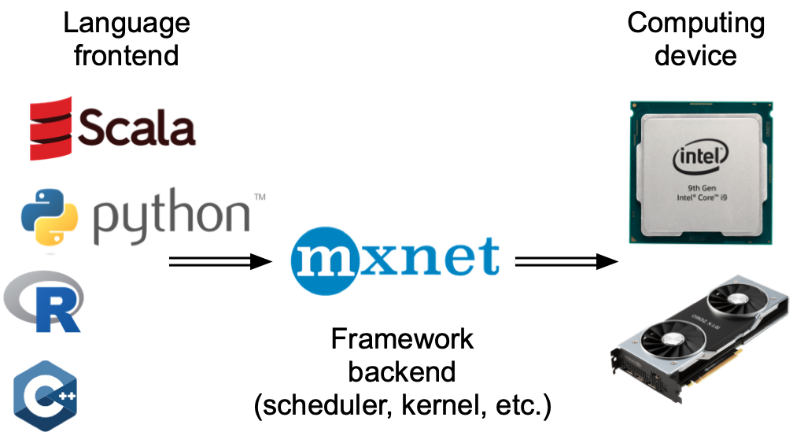
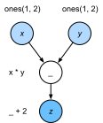
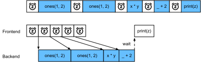

13.2. 异步计算¶
当今的计算机是高度并行的系统，由多个 CPU 核心（通常每个核心有多个线程）、每个 GPU 中的多个处理单元以及每台设备中常常存在的多个 GPU 组成。简而言之，我们常常可以在不同的设备上同时处理许多不同的事情。遗憾的是，Python 并不是编写并行和异步代码的好工具，至少在没有额外帮助的情况下不是。毕竟，Python 是单线程的，而且这一点在未来不太可能改变。MXNet 和 TensorFlow 等深度学习框架采用异步编程模型来提高性能， 而 PyTorch 使用 Python 自身的调度器，从而带来了不同的性能权衡。 对于 PyTorch，默认情况下 GPU 操作是异步的。当你调用一个使用 GPU 的函数时，这些操作会被排入相应设备的队列，但不一定立即执行，而要等到之后才执行。这使我们能够并行执行更多计算，包括在 CPU 或其他 GPU 上的操作。
因此，理解异步编程的工作方式有助于我们编写更高效的程序，即主动减少计算需求和相互依赖。这使我们能够降低内存开销并提高处理器利用率。
import os
import subprocess
import numpy
import torch
from torch import nn
from d2l import torch as d2l
import os
import subprocess
import numpy
from mxnet import autograd, gluon, np, npx
from mxnet.gluon import nn
from d2l import mxnet as d2l
npx.set_np()
13.2.1. 通过后端实现异步¶
作为热身，考虑下面这个玩具问题：我们想生成一个随机矩阵并将它与自身相乘。让我们分别在
NumPy 和 PyTorch 张量中做这件事，看看差别。 请注意，PyTorch 的
tensor 定义在 GPU 上。
# Warmup for GPU computation
device = d2l.try_gpu()
a = torch.randn(size=(1000, 1000), device=device)
b = torch.mm(a, a)
with d2l.Benchmark('numpy'):
for _ in range(10):
a = numpy.random.normal(size=(1000, 1000))
b = numpy.dot(a, a)
with d2l.Benchmark('torch'):
for _ in range(10):
a = torch.randn(size=(1000, 1000), device=device)
b = torch.mm(a, a)
通过 PyTorch 得到的基准测试输出快了几个数量级。 NumPy 的点积在 CPU 处理器上执行，而 PyTorch 的矩阵乘法在 GPU 上执行，因此后者理应快得多。但如此巨大的时间差异表明一定另有原因。 默认情况下，PyTorch 中的 GPU 操作是异步的。 强制 PyTorch 在返回之前完成所有计算，就能看出先前发生了什么：计算由后端执行，而前端把控制权交回 Python。
with d2l.Benchmark():
for _ in range(10):
a = torch.randn(size=(1000, 1000), device=device)
b = torch.mm(a, a)
torch.cuda.synchronize(device)
广义地说，PyTorch 有一个用于与用户直接交互的前端（例如通过 Python），以及一个供系统用来执行计算的后端。 如 图13.2.1 所示，用户可以用各种前端语言编写 PyTorch 程序，例如 Python 和 C++。无论使用哪种前端编程语言，PyTorch 程序的执行主要发生在 C++ 实现的后端中。前端语言发出的操作会被传递给后端执行。 后端管理着自己的线程，这些线程不断收集并执行排队中的任务。 请注意，要让这一机制正常工作，后端必须能够跟踪计算图中各个步骤之间的依赖关系。因此，相互依赖的操作无法并行化。
作为热身，考虑下面这个玩具问题：我们想生成一个随机矩阵并将它与自身相乘。让我们分别在
NumPy 和 mxnet.np 中做这件事，看看差别。
with d2l.Benchmark('numpy'):
for _ in range(10):
a = numpy.random.normal(size=(1000, 1000))
b = numpy.dot(a, a)
with d2l.Benchmark('mxnet.np'):
for _ in range(10):
a = np.random.normal(size=(1000, 1000))
b = np.dot(a, a)
通过 MXNet 得到的基准测试输出快了几个数量级。既然二者都在同一个处理器上执行，那一定另有原因。 强制 MXNet 在返回之前完成所有后端计算，就能看出先前发生了什么：计算由后端执行，而前端把控制权交回 Python。
with d2l.Benchmark():
for _ in range(10):
a = np.random.normal(size=(1000, 1000))
b = np.dot(a, a)
npx.waitall()
广义地说，MXNet 有一个用于与用户直接交互的前端（例如通过 Python），以及一个供系统用来执行计算的后端。 如 图13.2.1 所示，用户可以用各种前端语言编写 MXNet 程序，例如 Python、R、Scala 和 C++。无论使用哪种前端编程语言，MXNet 程序的执行主要发生在 C++ 实现的后端中。前端语言发出的操作会被传递给后端执行。 后端管理着自己的线程，这些线程不断收集并执行排队中的任务。请注意，要让这一机制正常工作，后端必须能够跟踪计算图中各个步骤之间的依赖关系。因此，相互依赖的操作无法并行化。


图13.2.1 编程语言前端与深度学习框架后端。¶
让我们再看一个玩具例子，以便更好地理解依赖图。
x = torch.ones((1, 2), device=device)
y = torch.ones((1, 2), device=device)
z = x * y + 2
z
x = np.ones((1, 2))
y = np.ones((1, 2))
z = x * y + 2
z

图13.2.2 后端跟踪计算图中各个步骤之间的依赖关系。¶
上面的代码片段也在 图13.2.2 中作了图示说明。 每当
Python
前端线程执行前三条语句中的一条时，它只是把任务返回给后端队列。当最后一条语句的结果需要被打印时，Python
前端线程会等待 C++ 后端线程完成变量 z
结果的计算。这种设计的一个好处是，Python
前端线程不需要执行实际计算。因此，无论 Python
的性能如何，它对程序整体性能的影响都很小。图13.2.3
展示了前端和后端如何交互。

图13.2.3 前端与后端的交互。¶
13.2.2. 屏障与阻塞¶
有一些操作会强制 Python 等待完成：
最明显的是
npx.waitall()，它会一直等到所有计算完成，无论这些计算指令是什么时候发出的。在实践中，除非绝对必要，否则使用这个操作符是个坏主意，因为它可能导致性能不佳。如果我们只想等到某个特定变量可用，可以调用
z.wait_to_read()。在这种情况下，MXNet 会阻塞返回 Python 的操作，直到变量z计算完成。其他计算完全可以在此之后继续进行。
让我们看看这在实践中如何工作。
with d2l.Benchmark('waitall'):
b = np.dot(a, a)
npx.waitall()
with d2l.Benchmark('wait_to_read'):
b = np.dot(a, a)
b.wait_to_read()
这两个操作完成所需的时间大致相同。除了明显的阻塞操作之外，我们还建议你留意隐式阻塞操作。打印一个变量显然要求该变量已经可用，因此是一种阻塞操作。最后，通过
z.asnumpy() 转换为 NumPy 以及通过 z.item()
转换为标量都是阻塞操作，因为 NumPy
没有异步的概念。它需要访问这些值，就像 print 函数一样。
频繁地把少量数据从 MXNet 的作用域复制到 NumPy 再复制回来，会破坏原本高效代码的性能，因为每一个这样的操作都要求计算图先求值出得到相关项所需的全部中间结果，然后才能做其他任何事情。
with d2l.Benchmark('numpy conversion'):
b = np.dot(a, a)
b.asnumpy()
with d2l.Benchmark('scalar conversion'):
b = np.dot(a, a)
b.sum().item()
13.2.3. 改进计算¶
在高度多线程的系统上（即使是普通的笔记本电脑也有 4
个线程或更多，在多插槽服务器上这个数字可能超过
256），调度操作的开销可能变得显著。这就是为什么让计算和调度异步、并行地进行非常可取。为了说明这样做的好处，让我们看看把一个变量多次加
1 会发生什么，分别以串行和异步方式进行。我们通过在每次加法之间插入一个
wait_to_read 屏障来模拟同步执行。
with d2l.Benchmark('synchronous'):
for _ in range(10000):
y = x + 1
y.wait_to_read()
with d2l.Benchmark('asynchronous'):
for _ in range(10000):
y = x + 1
npx.waitall()
Python 前端线程与 C++ 后端线程之间略微简化后的交互可以概括如下： 1.
前端命令后端把计算任务 y = x + 1 插入队列。 1.
后端随后从队列中接收计算任务并执行实际的计算。 1.
后端随后把计算结果返回给前端。 假设这三个阶段的时长分别为
\(t_1, t_2\) 和 \(t_3\)。如果我们不使用异步编程，执行 10000
次计算所需的总时间约为
\(10000 (t_1+ t_2 + t_3)\)。如果使用异步编程，执行 10000
次计算所需的总时间可以减少到 \(t_1 + 10000 t_2 + t_3\)（假设
\(10000 t_2 > 9999t_1\)），因为前端不必在每一轮循环中等待后端返回计算结果。
13.2.4. 小结¶
深度学习框架可以把 Python 前端与执行后端解耦。这允许快速异步地把命令插入后端，并获得相应的并行性。
异步性带来了响应相当灵敏的前端。但是，请小心不要使任务队列过满，因为这可能导致过高的内存消耗。建议在每个小批量处进行同步，使前端和后端大致保持同步。
芯片厂商提供了精密的性能分析工具，可以更细粒度地了解深度学习的效率。
请注意，从 MXNet 的内存管理转换到 Python 会强制后端等到特定变量就绪。
print、asnumpy和item等函数都有这种效果。这可能是我们想要的，但粗心使用同步会毁掉性能。